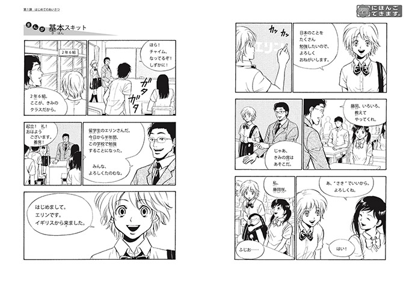
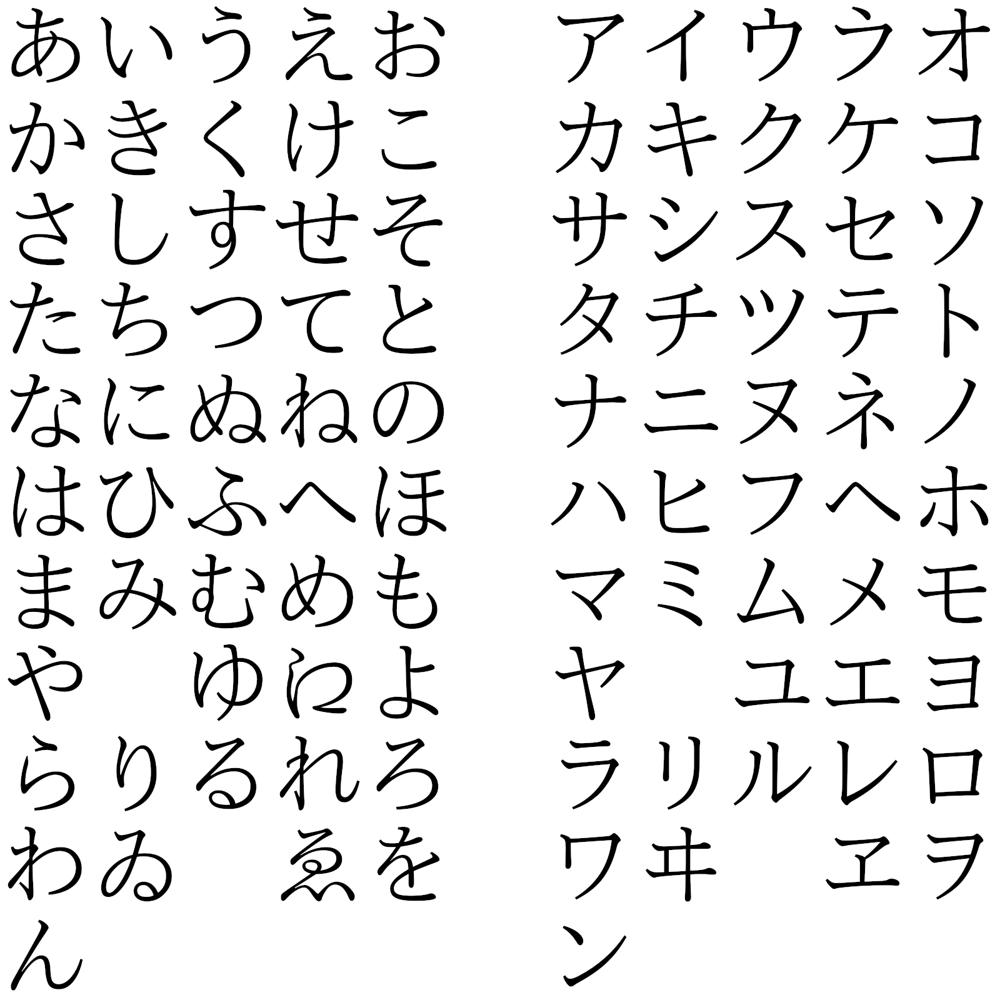

日语学习全景地图
本节目标：说出从零到无字幕追剧的全程分为几程、每程学完能看懂听懂什么，并指出自己今天站在哪一站。
一、从无字幕动画说起
打开一部没有字幕的动画，满耳日语，一个词也抓不住。这是零基础的起点，也是这套课程的出发点——终点反过来是：同一部作品，无字幕看下来，剧情线抓得住，难点句拆得开。
本课不出现一个假名，也不出现一条语法规则。今天只做一件事：把从零到无字幕追剧的路线图钉在墙上。这张图要回答三个问题：全程分为几程；每一程学什么、学完能看懂听懂什么；自己此刻站在哪一站。此后每学一课，都回到这张图上对照一次位置。
路线图的价值在能复述。合上书能把全程讲一遍，这张图才算真的学会了。
二、能力刻度：N5 到 N3
先看刻度。衡量日语能力的通用刻度是 JLPT（Japanese-Language Proficiency Test，日语能力测验）：面向非日语母语者举办的考试，按能力从低到高分为 N5、N4、N3、N2、N1 五级，N5 最低，N1 最高。本课不为应试刷题，只取它的等级描述当刻度用。
本课的终点是 N5 到 N3，口径是「日常交流级」：日常场景对话能进行，日常向原文读得动。各级的官方能力摘要与路线图位置的对应大致如下：
| 等级 | 官方能力摘要（大意） | 路线图上的位置 |
|---|---|---|
| N5 | 能理解一些基础的日语 | 第 3 程终点：一段 3 分钟日常对白无字幕抓大意 |
| N4 | 能理解基础的日语 | 第 4 程：口语进阶与角色口吻 |
| N3 | 能在一定程度上理解日常场合的日语 | 第 5 程终点：整集无字幕选段 |
N2、N1 在 N3 之上，不在本课范围。另一套常用口径来自 JF まるごと教材的 Can-do 描述，即不问「学了多少」，只问「能做什么」——本课每程末尾那句「学完能看懂听懂什么」，用的就是这套口径。
N5 阶段的日常寒暄对白大致是这个样子：

第 3 程学完，这类对白关掉字幕也抓得住大意。
三、全程五程走一趟
全程按五程推进：假名与发音、词汇与汉字、N5 语法骨架、口语进阶与语域、N3 长句与书面体。全貌如下图，菱形记号是途中的验收里程碑：
各程学什么、学完能看懂听懂什么：
| 程 | 学什么 | 学完能看懂听懂什么 |
|---|---|---|
| 第 1 程 · 假名与发音 | 平假名、片假名、真假名混读、单词高低音调 | 任意一行日文都能注上读音；声调查得到、标得出 |
| 第 2 程 · 词汇与汉字 | 音读训读拆解、场景词表、外来语当生词记 | 双汉字词拆得出读音归属；自我介绍场景开口说 |
| 第 3 程 · N5 语法骨架 | 判断句、动词ます形与过去形、助词、形容词、て形、愿望与能力、ている、经历、转述 | 一段 3 分钟日常对白，无字幕抓住大意与关键词 |
| 第 4 程 · 口语进阶与语域 | 帮手动词、意向与邀约、条件形、名词化、普通体、角色口吻、被动与使役 | 半集台词进流水线；句尾的变化听得出情绪 |
| 第 5 程 · N3 长句与书面体 | 授受与视点、原因与逆接、书面体、敬语最低库存、复句拆解 | 整集无字幕选段；轻小说长段落不再慌 |
第 1 程的全部家当是 46 个基础音。学完这一程，给日文汉字标注读音（振り仮名）的工序就能开工——追剧精读笔记的地基从这里打起：

第 2 程把中文母语的优势兑现成进度。日语汉字不少与汉字同形，读音却各有各的来历；分清音读与训读，就拿到了拆解双汉字词的钥匙。常用汉字 2136 字是这一程的弹药库：
四、四座验收里程碑
配套项目是「追剧精读笔记」：选一部对白日常的作品，随课程推进把台词原文抄进笔记，逐句注音、拆解语法、做成生词卡。兴趣输入驱动在这门课里的落地形式，就是教材自己选——笔记的主角永远是自己想看的那部作品。
路线图上穿插四座验收里程碑（实验课），每一座都用产物说话：
| 里程碑 | 排在哪 | 验收什么 | 交什么 |
|---|---|---|---|
| 实验一 · 第一页精读笔记 | 第 3 程开头 | 注音工序与生词卡工序跑通 | 一页笔记：一两分钟片段逐句注音加拆解 |
| 实验二 · 一段对白脱字幕 | 第 3 程结束 | N5 语法骨架的听力验收 | 3 分钟对白大意转述加笔记补全 |
| 实验三 · 半集精读笔记 | 第 4 程结束 | 口语进阶的流水线验收 | 半集逐句拆解加缩约还原清单 |
| 实验四 · 整集无字幕验收 | 第 5 程结束 | N5-N3 全程总验收 | 整集大意笔记加难点句拆解 |
最后一本笔记攒成的那天，就是毕业证。
五、今天站在第 0 站
这张图的用法只有一条：每学一课，回来对照一次位置。今天的位置是第 0 站——把地图本身学会；下一站是第 1 程的第一课，平假名认读。
本课的过关标准有两条：合上书口头复述路线图的阶段划分与各阶段目标；指出自己当前站在哪一站。前者考记忆，后者考用法。
学习节奏按每天 30 到 60 分钟设计，单课不超过一小时。语言学习吃连续性，细水长流胜过周末突击。
路线图还能当体检表用：一份自学计划哪里跑偏，对照图一看就知道。学着用这张图体检一次：
三步，每步都在纸上留结果：
- 默画路线。拿一张白纸，从「今天」起依次写下五程的名字和每程一句「学完能干什么」，再标出四座里程碑的位置。写完与上面的路线图对一遍，补上漏掉的。
- 圈出站位。在纸上圈出今天的位置——第 0 站，也就是把地图本身学会；在圆圈右侧写下下一站的名字。
- 选定素材。写下打算做「追剧精读笔记」的那部作品，要求对白日常。从今天起，它就是这门课的教材。